Транзистор биполярный средней мощности высокочастотный 2Т603 (А, Б, В, Г, И), КТ603 (А, Б, В, Г, Д, Е)
Транзисторы кремниевые эпитаксиально-планарные структуры n-p-n импульсные высокочастотные. Предназначены для применения в импульсный и переключающих высокочастотных устройствах. Выпускаются в металлостеклянном корпусе с гибкими выводами. Тип прибора указывается на корпусе.
Масса транзистора не более 1.75 г.
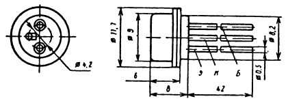
Электрические параметры
|
Статический коэффициент передачи тока в схеме с общим эмиттером при UКБ = 2 В |
|
| при T = +25 0C | |
| при IЭ = 150 мА | |
| 2Т603А, 2Т603В, КТ603Д | 20 ... 80 |
| КТ603А, КТ603В | 10 ... 80 |
| 2Т603Б, 2Т603Г | 60 ... 180 |
| КТ603Б, КТ603Г, не менее | 60 |
| КТ603Е | 60 ... 200 |
| при IЭ = 350 мА для 2Т603И, не менее | 20 |
| типовое значение | 50* |
| при T = -60 0C, IЭ = 150 мА | |
| 2Т603А, 2Т603В | 8 ... 80 |
| 2Т603Б, 2Т603Г | 20 ... 180 |
| 2Т603И, не менее | 8 |
| при T = +125 0C, IЭ = 150 мА | |
| 2Т603А, 2Т603В | 20 ... 180 |
| 2Т603Б, 2Т603Г | 60 ... 400 |
| 2Т603И, не менее | 20 |
| Граничная частота коэффициента передачи тока в схеме с общим эмиттером при UКБ = 10 В, IЭ = 30 мА | |
| не менее | 200 МГц |
| типовое значение | 370* МГц |
| Напряжение насыщения коллектор-эмиттер | |
| при IК = 150 мА, IБ = 15 мА | |
| 2Т603А, 2Т603Б, 2Т603В, 2Т603Г, не более | 0.8 В |
| типовое значение | 0.2* В |
| КТ603А, КТ603Б, КТ603В, КТ603Г, КТ603Д, КТ603Е, не более | 1.0 В |
| при IК = 350 мА, IБ = 50 мА для 2Т603И, не более | 1.2 В |
| Напряжение насыщения база-эмиттер | |
| при IК = 150 мА, IБ = 15 мА | |
| 2Т603А, 2Т603Б, 2Т603В, 2Т603Г, КТ603А, КТ603Б, КТ603В, КТ603Г, КТ603Д, КТ603Е, не более | 1.5 В |
| типовое значение | 0.9* В |
| при IК = 350 мА, IБ = 50 мА для 2Т603И, не более | 1.3 В |
| типовое значение | 1.0* В |
| Время рассасывания при IК = 150 мА, IБ = 15 мА | |
| 2Т603А, 2Т603Б, 2Т603В, 2Т603Г, 2Т603И, не более | 70 нс |
| типовое значение | 40* нс |
| КТ603А, КТ603Б, КТ603В, КТ603Г, КТ603Д, КТ603Е, не более | 100 нс |
| Постоянная времени цепи обратной связи на высокой частоте при UКБ = 10 В, IЭ = 30 мА, f = 5 МГц | |
| не более | 400 пс |
| типовое значение | 25* пс |
| Емкость коллекторного перехода при UКБ = 10 В, f = 5 МГц | |
| не более | 15 пФ |
| типовое значение | 3* пФ |
| Емкость эмиттерного перехода при UЭБ = 0 В, f = 5 МГц | |
| не более | 40 пФ |
| типовое значение | 35* пФ |
| Обратный ток коллектора, не более | |
| при T = +25 0C, UКБО = 30 В | |
| 2Т603А, 2Т603Б, 2Т603И | 3 мкА |
| КТ603А, КТ603Б | 10 мкА |
| при UКБО = 15 В | |
| 2Т603В, 2Т603Г | 3 мкА |
| КТ603В, КТ603Г | 5 мкА |
| при UКБО = 10 В для КТ603Д, КТ603Е | 1 мкА |
| при T = +125 0C | |
| при UКБО = 24 В для КТ603А, КТ603Б, КТ603 И | 60 мкА |
| при UКБО = 12 В для 2Т603В, 2Т603Г | 60 мкА |
| Обратный ток эмиттера, не более | |
| при UЭБО = 3 В для 2Т603А, 2Т603Б, 2Т603В, 2Т603Г, КТ603А, КТ603Б, КТ603В, КТ603Г, КТ603Д, КТ603Е | 3 мкА |
| при UЭБО = 4 В для 2Т603И | 3 мкА |
Предельные эксплуатационные данные
|
Постоянное напряжение коллектор-база и коллектор-эмиттер при RБЭ ≤ 1 кОм |
|
| при TП ≤ +70 0C | |
| КТ603А, КТ603Б | 30 В |
| КТ603В, КТ603Г | 15 В |
| КТ603Д, КТ603Е | 10 В |
| при TП ≤ +100 0C | |
| 2Т603А, 2Т603Б, 2Т603И | 30 В |
| 2Т603В, 2Т603Г | 15 В |
| при TП = +120 0C | |
| КТ603А, КТ603Б | 15 В |
| КТ603В, КТ603Г | 7.5 В |
| КТ603Д, КТ603Е | 10 В |
| при TП = +125 0C | |
| 2Т603А, 2Т603Б, 2Т603И | 24 В |
| 2Т603В, 2Т603Г | 12 В |
| при TП = +150 0C | |
| 2Т603А, 2Т603Б, 2Т603И | 18 В |
| 2Т603В, 2Т603Г | 9 В |
| Напряжение эмиттер-база | |
| 2Т603А, 2Т603Б, 2Т603В, 2Т603Г | 3 В |
| 2Т603И при TП ≤ +70 0C | 4 В |
| 2Т603И при TП ≤ +125 0C | 3 В |
| Постоянный ток коллектора | 300 мА |
| Импульсный ток коллектора при tИ ≤ 10 мкс, Q ≥ 10 | 600 мА |
| Постоянная рассеиваемая мощность | |
| при T ≤ +50 0C | 0.5 Вт |
| при T = +85 0C для КТ603А, КТ603Б, КТ603В, КТ603Г, КТ603Д, КТ603Е и при T = +125 0C для 2Т603А, 2Т603Б, 2Т603В, 2Т603Г, 2Т603И | 0.12 Вт |
| Тепловое сопротивление переход-среда | 200 0C/Вт |
| Температура p-n перехода | |
| 2Т603А, 2Т603Б, 2Т603В, 2Т603Г, 2Т603И | +150 0C |
| КТ603А, КТ603Б, КТ603В, КТ603Г, КТ603Д, КТ603Е | +120 0C |
| Температура окружающей среды | |
| 2Т603А, 2Т603Б, 2Т603В, 2Т603Г, 2Т603И | -60 ... +125 0C |
| КТ603А, КТ603Б, КТ603В, КТ603Г, КТ603Д, КТ603Е | -40 ... +85 0C |
Примечание
*) Звездочкой отмечены параметры или их значения, приведенные в справочных данных ТУ. При производстве полупроводниковых приборов они могут не контролироваться.
Не допускается пайка выводов ближе 5 мм от корпуса. Пайку выводов допускается производить не более 10 с при температуре не более +270 0C с теплоотводом между корпусом и местом пайки.
Расстояние от корпуса до начала изгиба вывода 3 мм. Запрещается кручение выводов вокруг оси.
Дополнительные характеристики
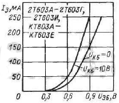
Рис. 1. Зависимость тока эмиттера от напряжения эмиттер-база.
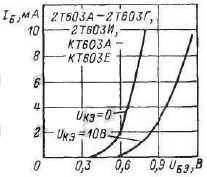
Рис. 2. Входные характеристики.
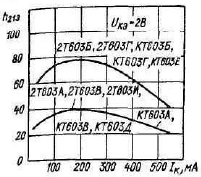
Рис. 3. Зона возможных положений зависимости статического коэффициента передачи тока от тока коллектора.
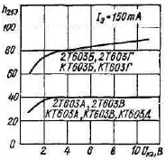
Рис. 4. Зона возможных положений зависимости статического коэффициента передачи тока от напряжения коллектор-эмиттер.
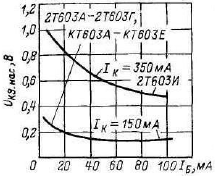
Рис. 5. Зависимость напряжения насыщения коллектор-эмиттер от тока базы.
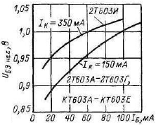
Рис. 6. Зависимость напряжения насыщения база-эмиттер от тока базы.
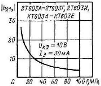
Рис. 7. Зависимость модуля коэффициента передачи тока от частоты.
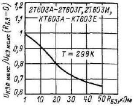
Рис. 8. Зависимость максимально допустимого напряжения коллектор-эмиттер от сопротивления база-эмиттер.
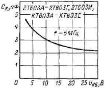
Рис. 9. Зависимость емкости коллекторного перехода от напряжения коллектор-база.
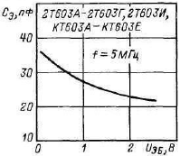
Рис. 10. Зависимость емкости эмиттерного перехода от напряжения эмиттер-база.
Ссылки:
26.09.2019
Альтернативные источники
энергии
Компьютеры и
Интернет
Магнитные поля
Механотронные системы
Перспективные
разработки
Электроника и технология